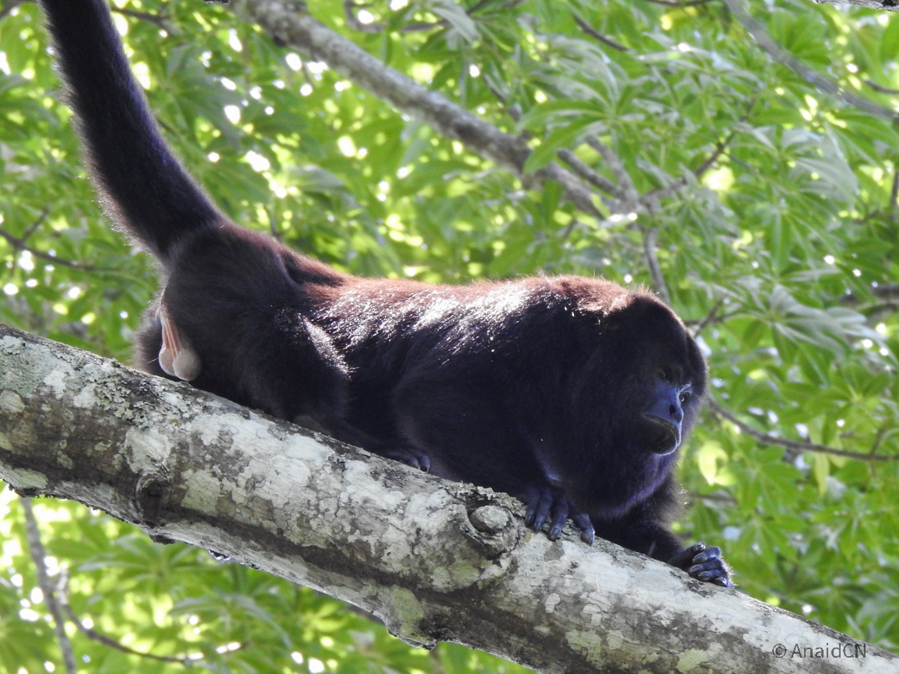
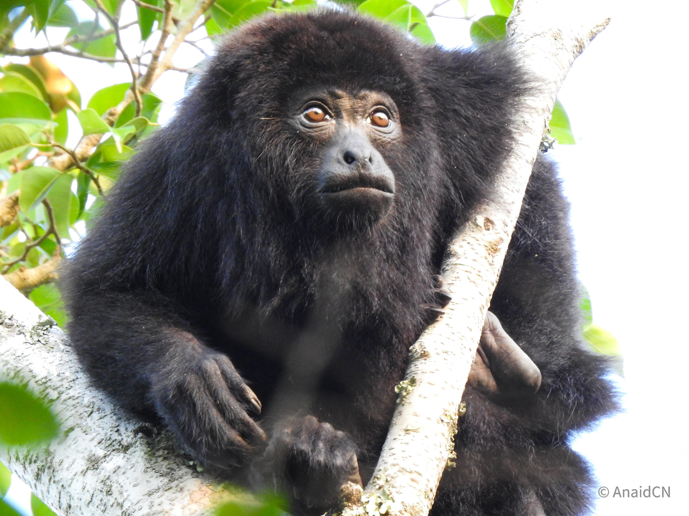
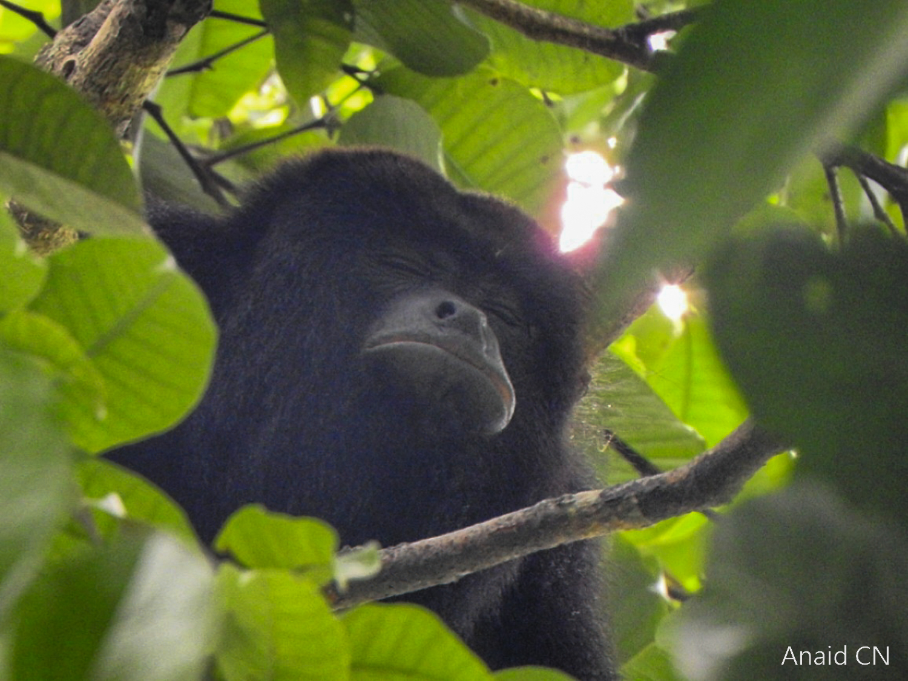
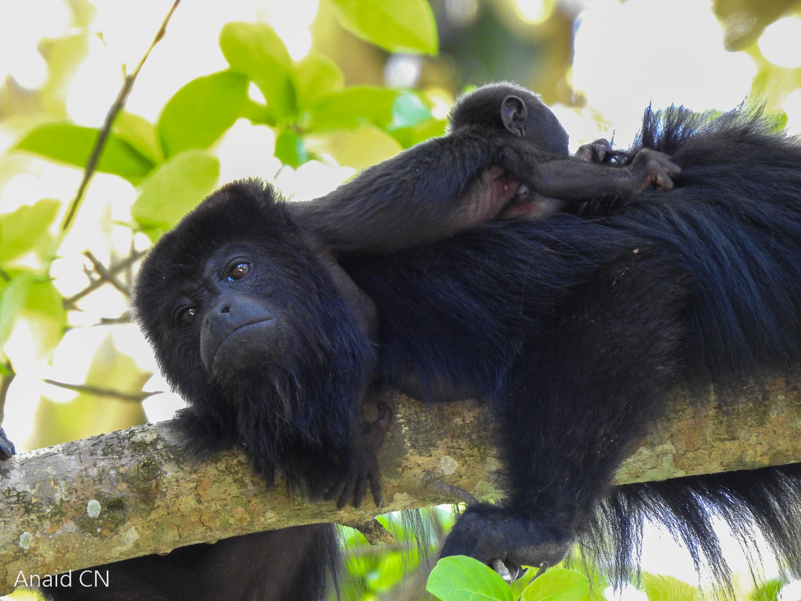
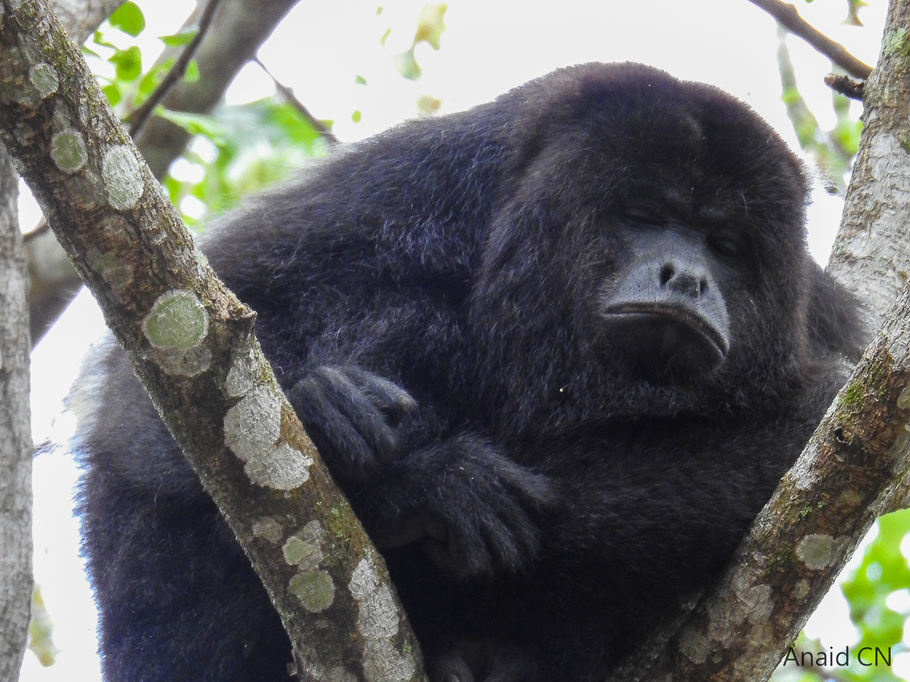
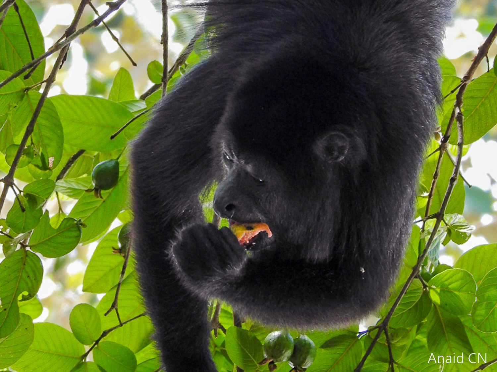
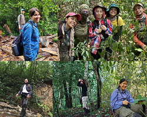
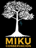

Chato
Grumpy but protective, Chato loves the mangoes that the local people of Palenque grow in their yards. These tasty treats, however, aren’t part of their natural diet; they were introduced in Mexico during colonization.
The Yucatán black howler monkey (Alouatta pigra), known locally as "mono saraguato," is a diurnal primate that lives in cohesive groups of 2 to 12 individuals. These groups are usually made up of one or two adult males, several adult females, and their young. Feeding mainly on leaves and fruits, they are also famous for their booming calls, the loudest among land mammals.
Sadly, like many primates, they are endangered. Deforestation, isolation of forest fragments, and human activities such as cattle ranching, plantations, and road building threaten their survival. My work focuses on how these monkeys adjust to human-modified habitats, and I’ve had the privilege of getting to know several remarkable individuals.

Grumpy but protective, Chato loves the mangoes that the local people of Palenque grow in their yards. These tasty treats, however, aren’t part of their natural diet; they were introduced in Mexico during colonization.

A resilient mother of two, Lumi lives in a rubber plantation with very few trees that provide food. In 2019, I had the privilege of observing her give birth to her second child, a moment I later reported in Primates.

Carmelo is a calm father of (counting...). His group survives in a small forest fragment now surrounded by oil-palm plantations.

Rosa and her baby live in a forest fragment east of Palenque National Park. Their habitat resembles the park, but is not as big or well-conserved.

Polo is the grumpiest of them all. He lives with lovely Lili and Lula in a small forest fragment surrounded by cattle ranches, isolated from the larger forest.

Canela lives with her group in the grounds of a local primary school. Some children adore the monkeys, while others still harass them. A bit of a bittersweet coexistence.
Science thrives on collaboration. I'm grateful for the people who support and inspire my research.
I’m part of the Caillaud Lab in UC Davis’s Department of Anthropology. Led by Prof. Damien Caillaud, our group uses quantitative methods to measure and analyze behavior in social species.

Working in the field isn’t solitary! I've been fortunate to work with the most passionate early-career biologists who became more than colleagues. Among them: Paulina, Irais, Alba, Erika, Liz, Jorge, Nacho, Ulises, Valeria, and my top collaborator in research and life, Dallas Levey.

I partner with Miku Conservación, a Mexico-based NGO devoted to primate conservation, environmental education, and community engagement. Together, we work to safeguard Mexican primates and promote forest conservation for both wildlife and local communities.